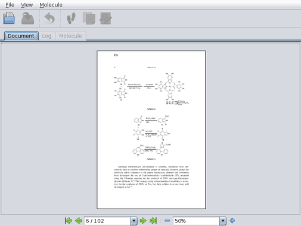
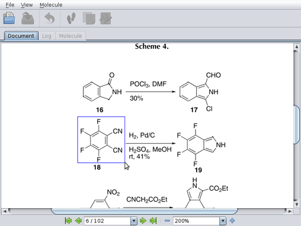
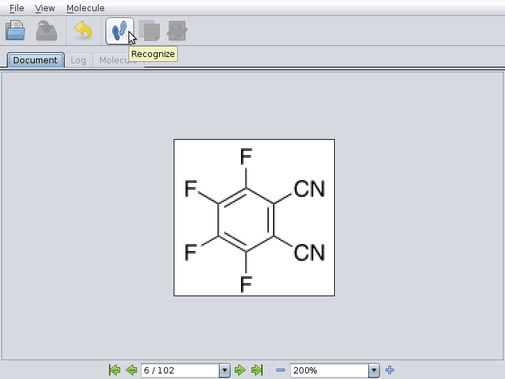

Look at the Download page for the package suitable for your system. For Windows and Mac OS X, an installer executable is provided. On Linux you just need to unpack the provided zipfile and run the following command:
java -jar /path/to/imago-gui.jar
You can also run the application without installing and downloading it using Java Web Start technology. Open the following JNLP-file to execute Imago OCR Visual Tool.
The imago-gui.jar file is included in the package for each architecture. It doesn't have any depenent files. Binary dynamic libraries are extracted from JAR files and loaded automatically.
The interface is simple and straightforward. You can open an image (PNG/JPEG/GIF) or a document (PDF/TIFF) and view in in the "Document" tab:

You can scale up the image (or the document page) and select the desired structure with the mouse:

Then you will see the selected structure:

Soon after pressing the “Recognize” button, you will get the re-rendered image with the recognized molecule:
You can also see the application log to know what happened and how much time it took:

The “Save molecule” button brings up a dialog to save the resulting molfile.
The “Open sketcher” button opens the resulting molfile in an external application, that can be specified.